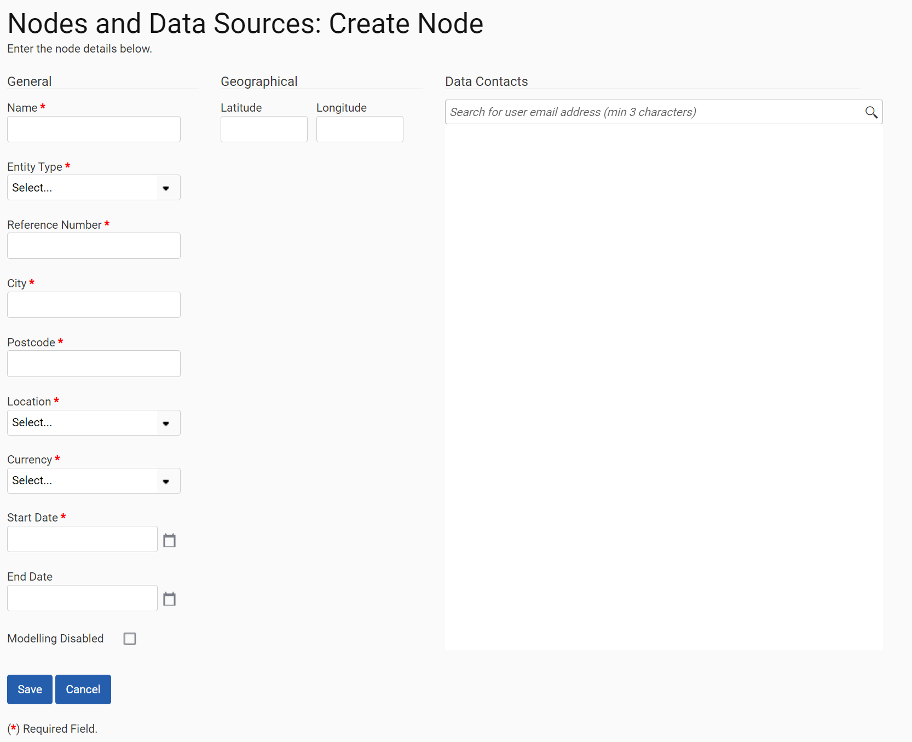
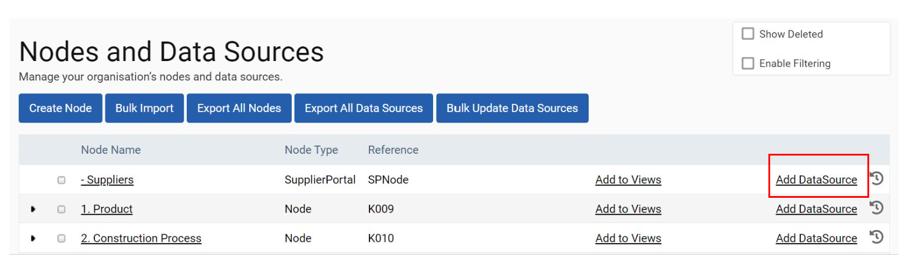
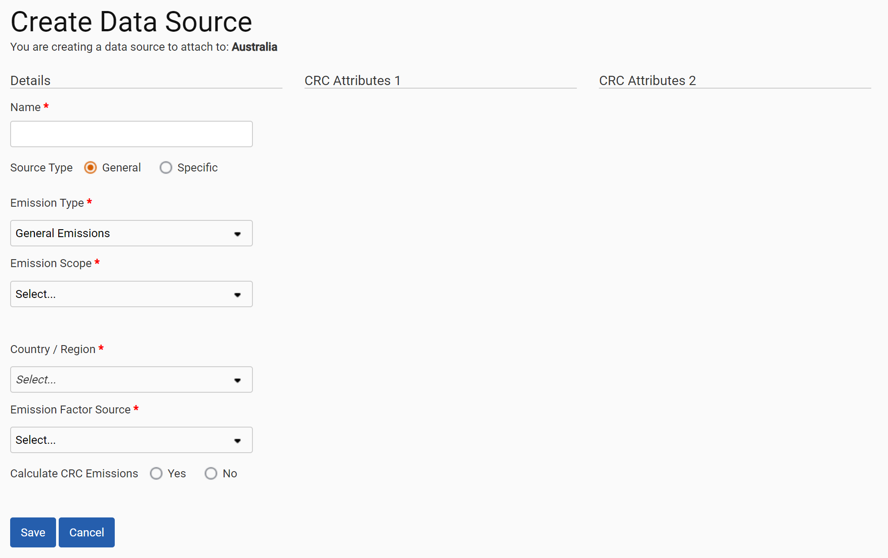
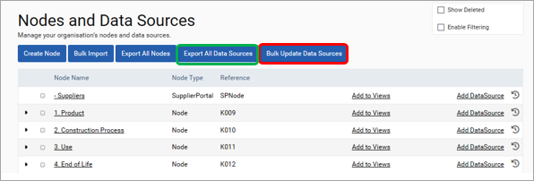
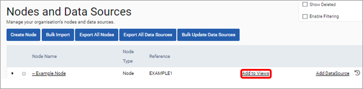
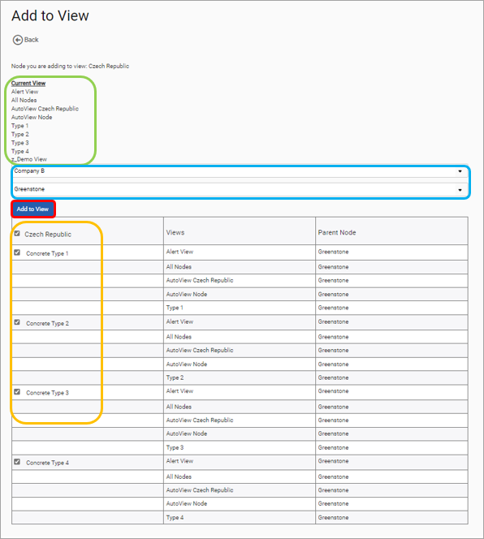

Nodes and Data Sources is the area within Admin where nodes and data sources can be added to your site. To create a node, select the ‘Create Node’ button and fill in the fields described below.

| Field | Explanation |
| Name | The name of the node which will be visible in all sections of the platform. |
| Entity Type | The type of node, for example an office, branch, datacenter etc. This field can be useful when modelling data as different intensity factors can be used for each entity type. |
| Reference Number | A unique identifier for the node. |
| City | The city of the node. |
| Postcode | The postcode or zip code of the node. |
| Location | The country or region of the node. Automatic views can be created based on the location of nodes. |
| Currency | The default currency for cost uploads to this node. |
| Start Date | The date from which the node entered the portfolio of your organization. Please note, modelling is disabled for nodes before their start dates. Nodes are also marked as closed in reports for dates before their start date. |
| End Date | The date after which the node left the portfolio of your organization. Please note, modelling is disabled for nodes after their end dates. Nodes are also marked as closed in reports for dates before their start date. |
To add a DataSource to a node select the ‘Add DataSource’ button next to a node (red outline) and fill in the details outlined in the table below.


| Field | Explanation |
| Name | The name of the DataSource as visible throughout the platform and for use in uploads. |
| Source Type | The type of source that could be selected is either General or Specific, and this selection will affect the emission type available to choose. |
| Emission Type | The type of data that the DataSource should hold, such as electricity (grid) or fuel. |
| Emission Scope | The scope to which the emissions from this data source should be allocated as defined in the GHG protocol. |
| Country / Region | Emissions calculations in environment are country specific. The country used in these calculations are defined in this field. Please note that this will impact emissions calculations and should be selected carefully. Please consult the methodology map for details. |
| Emission Factor Source | The source of the emissions factors used in emissions calculations. Please note, this will impact emissions calculations and should be selected carefully. |
Data Sources can be updated in bulk using the Bulk Update Data Sources button (red outline). First, click “Export All Data Sources” (green box), you can then make changes to the datasources before clicking “Bulk Update Data Sources” (red box).
The following fields can be changed using the update functionality.

Please remember that any nodes or data sources that have been added to your organisation's SPM site need to be added to a view before these can be accessed. There are two ways to add nodes & datasources to a view.
Nodes can be added to a view in the “Nodes & Data Sources page” using the Add to Views (red outline) highlighted below.

This will take you to the page below. The views the node is already added to are shown in the green outline. The view and the parent node are selected from the two selection lists shown in the blue outline. Select the data sources that are to be included in the view using the tick box to the right of each data source as shown in the orange outline. Once you are satisfied that you have selected what you need to, click on the ‘Add to View’ button (red outline) and your node and data sources will be added to your selected view.

Nodes & Data Sources can also be created in bulk using the associated upload template, selecting the ‘Bulk Import’ button on the Nodes and Data Sources page and following the on-screen instructions. Nodes can also be identified in bulk using this upload. The node reference is used as a reference point for doing so. Uploading a row with an existing node reference will update the existing node to the details outlined in the upload.